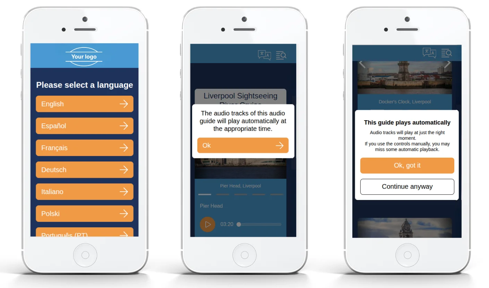
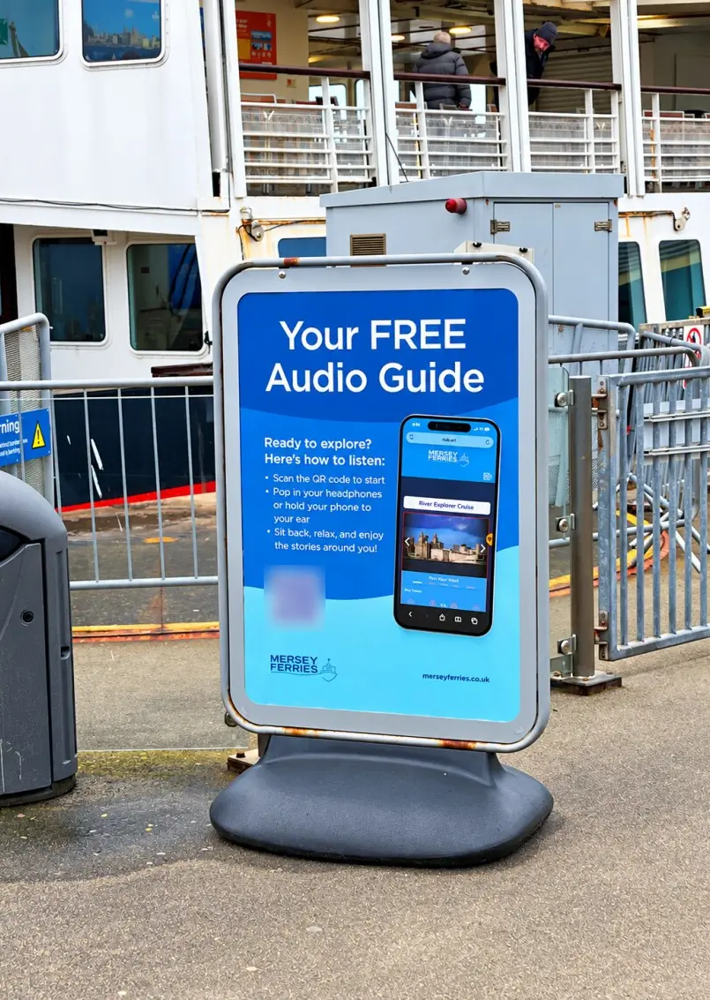
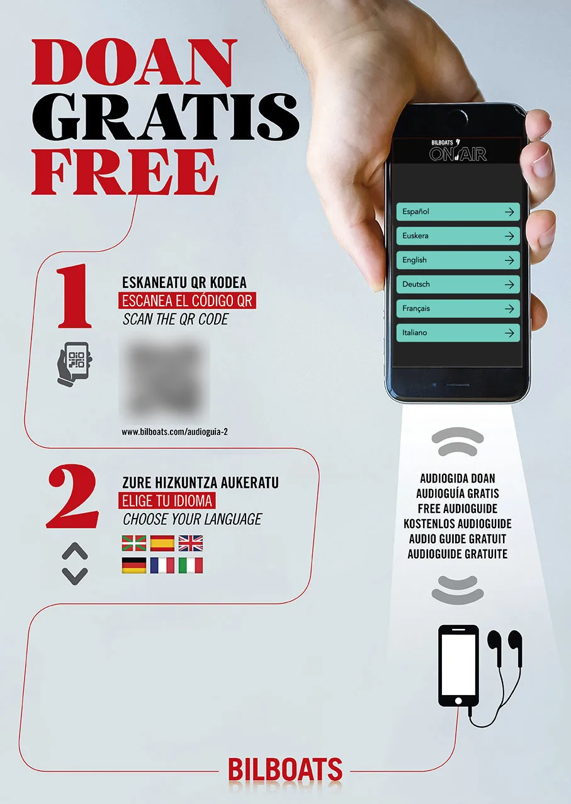
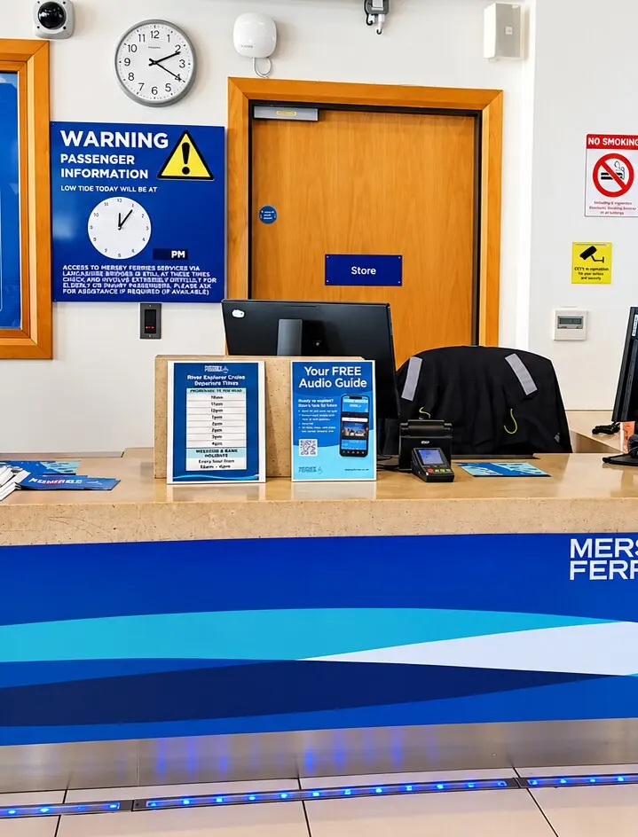
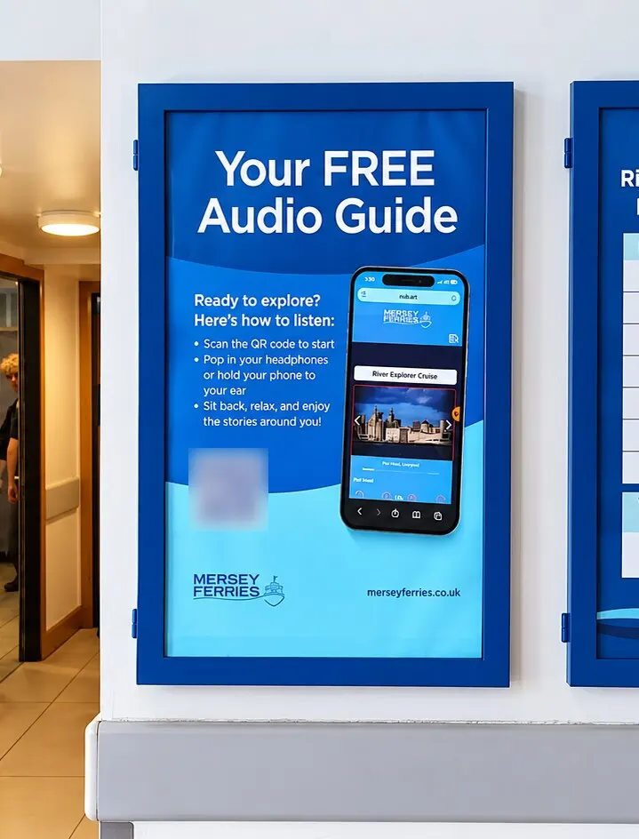
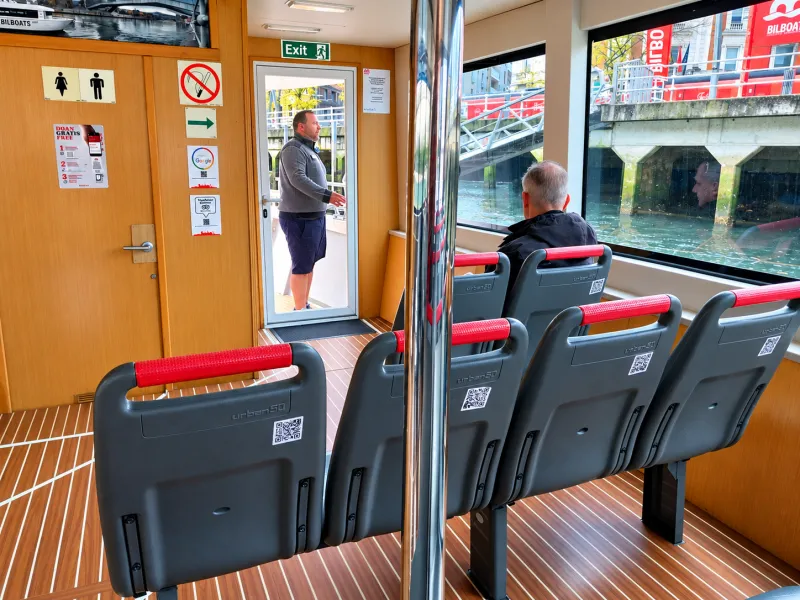
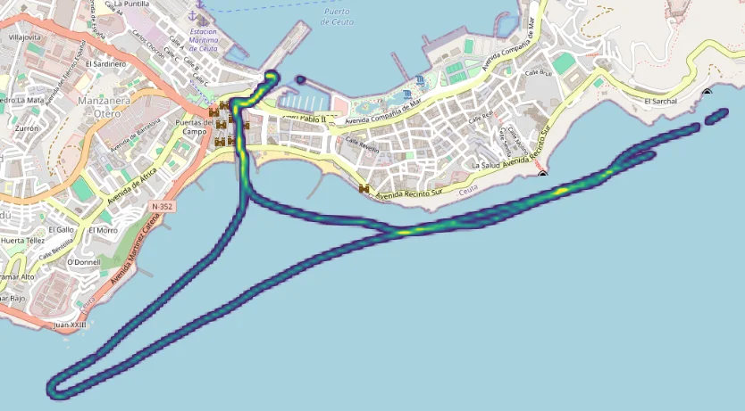
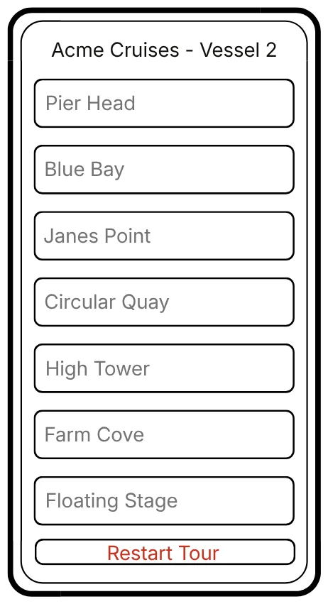

Nubart MOTION: the launch
This page collects what an operator needs when launching a Nubart MOTION audio guide with triggered tracks on boats or buses: how to explain the guide to passengers, how to use the QR codes, and how to brief the crew. Everything here can be adapted for your own signage, website and training material.
Explaining the guide to passengers
How it works, in plain language
Passengers scan a QR code on board with their phone camera, choose their language and put on headphones. The commentary then starts by itself, triggered by the position of the vehicle along the route. There is nothing to press, no app to download and no registration.

The fact that the tracks play automatically is the point that passengers most often miss. A track that a passenger starts manually blocks the next one: no track starts while another is still running, so the passenger misses the next automatic track. The guide says when it opens that the tracks play automatically, and warns again if passengers try to play manually. However, many passengers close the pop-ups without reading them, so signs and crew should say it as well.
Suggested sign text
The suggestions below can be mixed and adapted. Words in square brackets are placeholders.
On the vessel
| Short and general | Curiosity hook | Curiosity hook, with language and automatic start | |
|---|---|---|---|
| Headline | Listen in your language | Wonder what that building is? | Wonder what that building is? |
| Line under the headline | – | Don't miss a thing. Get our free audio guide. No app required. | Don't miss a thing. Get our free audio guide. No app required. |
| QR code | [QR code] | [QR code] | [QR code] |
| Steps | 1. Scan the code with your phone camera. 2. Choose your language. 3. Put on your headphones. The commentary starts by itself as we pass each sight. |
• Open your camera. • Scan the code. • Enjoy the story. |
• Scan the code with your camera. • Choose your language. • Put on your headphones. |
| Last line | No app to download. No registration. | Please use headphones for the best experience. | Nothing to press: the commentary starts by itself as we pass each sight. |
The first and third versions tell passengers to choose a language and that nothing has to be pressed. These are the two points passengers most often miss, so we recommend one of them on the vessel.
At the terminal
| Version a | Version b | |
|---|---|---|
| Headline | Get your free audio guide ready before you board and unlock [Name of the guide] | Unlock [Name of the guide] |
| Line under the headline | Don't miss a thing. No app required. | Set up before you board. No app required. |
| QR code | [QR code] | [QR code] |
| Steps | • Open your camera. • Scan the code. • Enjoy the story. |
• Open your camera. • Scan the code. • Enjoy the story. |
| Last line | Please use headphones for the best experience. | [Optional: Free Wi-Fi on board.] |
Add "Free Wi-Fi on board" only if it is available.
Stickers
Scan. Choose your language. Listen.
If the commentary is a live guide with translation
MOTION can also translate a speaking guide or captain live. For passengers the steps are the same, but two things in the wording change. The headline becomes: Hear the guide in your language. The automatic start line is replaced by: The translation follows what the guide says. We don't recommend "starts by itself as we pass each sight" here, because nothing is triggered by position in this set-up.
Wording we don't recommend
We don't recommend listing the available languages on printed material. A list becomes wrong, and has to be reprinted, as soon as a language is added. "In your language" stays true.
We don't recommend suggesting that passengers play the commentary through the phone speaker. On a shared deck or seat it disturbs other passengers. Headphones, or the phone held to the ear, are the better instruction.
Examples of signs


QR codes
Which kind of QR code
Nubart can provide access to the guide in three ways: non-transferable codes printed on cards, non-transferable codes sent online or through an API, or a generic QR code. The first two can be sold to passengers; the generic code gives free access to everyone. The differences are explained under our three delivery options.
Most Nubart MOTION customers choose a generic QR code. It is a plain link to the guide and technically works wherever it is scanned, including from a photo or a screen. This is why it matters where the working codes are placed, as explained below.
In the standard set-up, each vehicle that operates at the same time has its own master smartphone and its own code, matching that vehicle's commentary. Name the print files after the vehicle to avoid mix-ups when printing and installing.
Alternatively, if you would rather use a single QR code, or if you add another vessel later, Nubart can set up the guide in a modular way: passengers choose their vessel or route in the guide itself, and the commentary follows their choice. Please talk to us before you print, so that the codes match the set-up.
Where to use working codes
Place working codes on board, or at the ticket office or pier where passengers wait to board. On websites and leaflets, use a placeholder code or the instruction "scan the code on board". This prevents people from scanning a code from a screen at home, which would distort your usage statistics and feedback.
Where mobile coverage along the route is weak, scanning before boarding is the better choice. With offline mode, the guide loads tracks in advance: on a good connection at the quay this is quick, but in the middle of the river it can take a long time. Mersey Ferries, for example, places its main signs at the ticket office in front of the quay and keeps only backup codes on board.
Codes at the ticket office or pier should be agreed with Nubart beforehand, so that they match your set-up.
Size, placement and printing
Use the vector file (SVG) for print and the high-resolution PNG for screens.
On a moving vehicle, passengers scan from their seat, so print the code as large as the space allows. Keep the white border around the code intact, keep the contrast high, and avoid glossy finishes that reflect sunlight.
Place the code where passengers can see it from their seat, and not where it is exposed to direct glare.



Before launch, test every code with several phone models in real conditions: sunlight, wind and movement.
Briefing the crew
What the crew should say
A short welcome line is enough: "Scan the code, choose your language, and the commentary starts by itself as we pass each sight. There is nothing to press, and you do not need an app."
If English is played over the speakers, add: "English is on the speakers. Scan for other languages, or to read the English text."
The master smartphone
What it does
In set-ups with triggered tracks, one smartphone on each vessel, the master smartphone, controls when the commentary starts. It receives GPS and internet data to determine the correct timing and sends the triggers to the passengers' devices. It stays with the crew throughout the journey and is never handed to passengers.
A trigger is only a very short message, "play track X now", so even a weak connection is usually enough. The passengers' phones need a connection to receive it, also when the guide is in offline mode. Before the guide is delivered, Nubart normally records the vessel's route to find the weak spots, and covers them with time-based triggers.

Set-up on board
The crew sheet sums up the set-up, the Remote Control screen, how to reconnect after a restart and what to do if a track does not start. It prints on a single A5 sheet, front and back. Print one for each vessel, fill in the vessel's details, laminate it and keep it next to the master smartphone.
Open the printable crew sheet (A5)
Place the phone at the highest point of the vessel, ideally near a window and away from radars or other devices that emit radio signals. This gives the best GPS and internet reception.
Keep it connected to a power source at all times.
Keep the screen unlocked at all times.
Keep the "Remote Control" tab open for the whole journey.
Use Chrome on Android or Safari on iOS. Other browsers, such as Firefox, are not suitable for the master smartphone.
Location permission must be granted at system, browser and website level, and set to "Precise Location".

This screen must remain open throughout the journey.
The colour of each track shows its status: green means not triggered yet, red with a progress bar means it is being sent now, grey means it was sent successfully, and yellow means it could not be sent, which normally means there is no connectivity at that spot.
The icon on each track shows how it starts: a pin for tracks that start automatically at a location, a clock for tracks that start after a set time, and a hand for tracks that the crew can start by tapping. The hand appears only on tracks that were set up this way. If all tracks are triggered in the same way, no pin or clock is shown. After tapping a track, wait until it turns grey before starting another one.
"Restart Tour" at the bottom of the screen is optional. It only turns all tracks back to green on the crew's own screen, ready for the next tour. It has no effect on passengers' phones, and skipping it has no effect on the commentary.
Maintenance
Restart the smartphone every two to three months for optimal performance. After a restart, unlock the phone, open the browser, go to the Nubart customer login page, log in with the vessel's login details, select "Remote Control" and click on the right vessel.
The login for the vessel needs only the "Guide" permission, which is enough to operate the Remote Control. The customer's administrator can create it in the Nubart customer area. Avoid using an administrator login on the vessel.
Passengers' phones
That depends on how the guide is set up. There are three ways to deliver the tracks to the passengers' phones:
- Streaming: each track is fetched when it is needed. Phones need a mobile data connection or Wi-Fi throughout the trip.
- Total offline: right after the passenger has chosen a language, the guide loads all its content onto the phone, and asks the passenger to wait a moment until it is finished. Afterwards the tracks are stored on the phone and no longer need to be downloaded. The phone still needs a connection, even a weak one, to receive the signal to start each track.
- Partial offline: the guide loads in advance only the tracks for stretches of the route where mobile coverage is weak, in the same way and with the same request to wait. The other tracks stream as usual.
In both offline modes, if a phone cannot store the content, for example because it is short of storage space, the guide switches to streaming automatically. If you are not sure which mode your guide uses, ask Nubart.
The audio files are small, mono and compressed, so data use stays low. Even so, the data comes from the passenger's mobile plan unless Wi-Fi is available, and passengers from abroad may worry about roaming charges. If you offer free Wi-Fi where passengers scan the code or on board, say so on the signage.
Ask the passenger to raise the volume on their phone. The maximum volume differs considerably between phone models, so the same track can sound quieter on one phone than on another. On a noisy vessel, earphones, wired or wireless, give a much better result than the phone's speaker. A passenger without earphones can hold the phone close to the ear, as described in the next question.
They can hold the phone close to the ear with the volume low. The guide plays through the phone's main speaker, not through the earpiece used for calls, so the speaker, usually at the bottom of the phone, should face the ear. At low volume the commentary is barely audible to others.
For the whole trip, earphones are more comfortable and work much better on a noisy vessel. It therefore helps to tell passengers in advance to bring them, for example in the booking confirmation, on the website and at the ticket office. If you want to offer headphones yourself, a low-cost pair at the ticket office is an option. Phones use different connectors, so check which kind suits most of your passengers.
Troubleshooting and support
Ask the passenger not to press play, and to wait for the next sight. The commentary follows the route: each track starts by itself when the vessel reaches its trigger point.
Playing a track manually has a side effect. While a track is running, no other track can start, so a passenger who plays a track manually misses the next automatic one. The guide warns passengers about this when they use the controls.
If tracks are missing for all passengers, or repeatedly at the same place, see the next two questions.
Check that the master smartphone is connected to power, that the screen is unlocked and that the "Remote Control" tab is open on the right vessel. If the phone has restarted or the browser was closed, reconnect as described under Maintenance.
A track that shows yellow on the Remote Control screen could not be sent, normally because there was no connectivity at that spot.
For tracks marked with a hand icon, the crew can start the track by tapping it on the Remote Control screen.
Emergency only: if the master smartphone cannot be reconnected and no track starts at all, passengers can start the tracks themselves by pressing play on the track for the sight they are passing. This is not an alternative way of operating the guide. A track that is still running blocks the next one, so passengers should play one track at a time and let it finish.
Nubart can adjust the trigger lines remotely, without a visit to the vessel. Email the name of the trigger and the vessel to info@nubart.eu.
Support
Support is available by email (info@nubart.eu) and by phone (+49 (0)30 216 02 001), Monday to Friday, 9:00 to 17:00 Berlin time, excluding public holidays in Berlin. Weekend support is not part of the standard service, but can be agreed in exceptional cases, for example during the first weeks after launch.
Privacy
The wording below can be adapted for signage and for your website. Please check it against your own privacy policy.
Short version for signage
No app. No registration. Anonymous usage statistics only. Your phone's location is never requested.
Version for the website
The audio guide runs in your phone's browser. No app, registration or account is needed, and no personal data is requested.
Nubart, the provider of the guide, records anonymous passenger usage statistics, such as the language chosen, the type of device, the country of origin as indicated by the browser settings and the tracks listened to. These statistics are aggregated and cannot be traced back to an individual. IP addresses are not stored. The data is hosted in the EU (Ireland).
To work properly, the guide stores only first-party technical cookies on your phone. They stay there until you delete them or your browser removes them automatically. The guide does not use third-party cookies or external tracking services.
Your phone's location is never requested. The position of the vessel is determined by the master smartphone operated by the crew, not by passengers' phones. It is recorded separately from the passenger statistics, only to monitor and improve the triggering.
A feedback form is available and entirely optional. Please do not include personal details, such as your name or email address, in your comments.